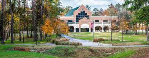

Places studied Pattonville School District Places Taught  Researcher Publications Plato, Souls, and Motions Health and Disease in Plato's Timaeus Knowledge and Opinion in Plato's Republic Physical Change in Plato's Timaeus The Form of Soul Causation and Creation in Late Antiquity